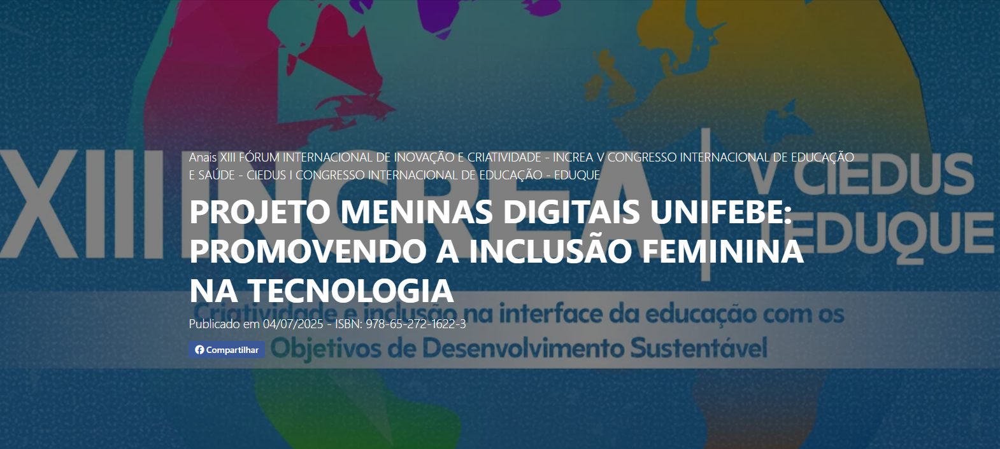

BARREIRAS À INCLUSÃO FEMININA NAS ÀREAS DE TIC: IMPACTOS DA SÍNDROME DO IMPOSTOR E OUTRAS DESIGUALDADES
Autoras: Thaís Fabiana de Souza e Hannelore Nehring
Ano: 2025

PROJETO MENINAS DIGITAIS UNIFEBE: PROMOVENDO A INCLUSÃO FEMININA NA TECNOLOGIA
Autoras: Izadora Montibeller e Hannelore Nehring
Ano: 2025